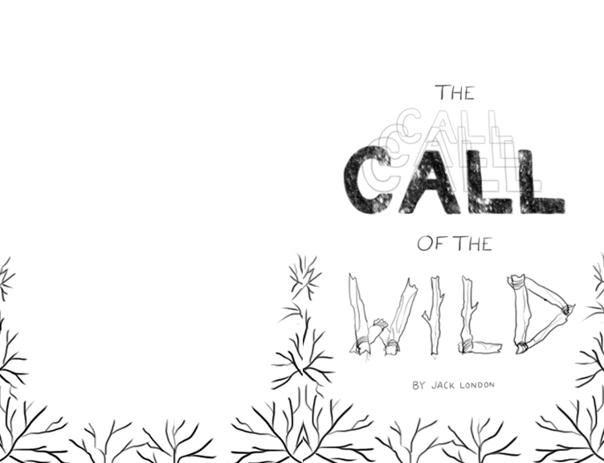

Mockup by timmdesign on Freepik


Project Overview
Course: Graphic Design
Professor: Lauren Wickware
Software: Adobe InDesign, Adobe Photoshop
Equipment: Nikon D5600, Wacom Intuos Pro
Additional Resource: Milanote
About
I was instructed to redesign a book cover with the goal of drawing a young adult audience to classic literature. A title page, half title page, and table of contents were also to be included.
The Goal
There were three primary objectives:
- To experience the entire design process from concept to design, developing several iterations and applying feedback before reaching the final product.
- To apply design principles to visually communicate a concept.
- To use type to convey meaning.
- The tone of the design is different to the tone of the original book cover.
- All elements in the original design are included.
- Typography is the focus of the design. Other graphic elements are kept to a minimum.
- Design principles including Gestalt principles, scale, framing, and hierarchy are applied.
Design
The concept of my design focused on the main character, a dog named Buck, and his internal and
external journey from domesticated to feral, as well as his fight to survive in a new, brutal
environment.
The monochromatic blue colour scheme with a pop of red blood reflects Buck's fight to live in the
icy setting. "Call" is in a muted gold that acts as a complementary colour to the blues while
alluding to the Klondike Gold Rush, which served as the catalyst for Buck's capture and signalled
the beginning of his journey. The alignment of "The Call of the" creates movement and carries the
eye toward "Wild," representing Buck's odyssey into the wild. "Wild" is bold, and bloody - edgy
imagery to grab the attention of a maturing young adult audience.
The typeface I chose was Baskerville, a traditional typeface with serifs. I chose a font with serifs
as they help the eye 'connect' letters, enforcing the movement created by my alignment techniques.
The traditional characteristic of Baskerville also represents Buck's domesticated state, whereas his
feral state is depicted by the blood splatter on the word "Wild." As Buck is still Buck on the
inside, not the aggressive dog others in the novel perceive him to be, I continued to use
Baskerville for the word "Wild", rather than a harsher typeface. The table of contents also operates
on the idea of Buck's movement through his journey, consistent with the other design choices above.

The Original Book Cover for The Call of the Wild.

Mind Map.


Moodboard and Research.


Alternative concept sketches.
Aligning my table of contents in InDesign.